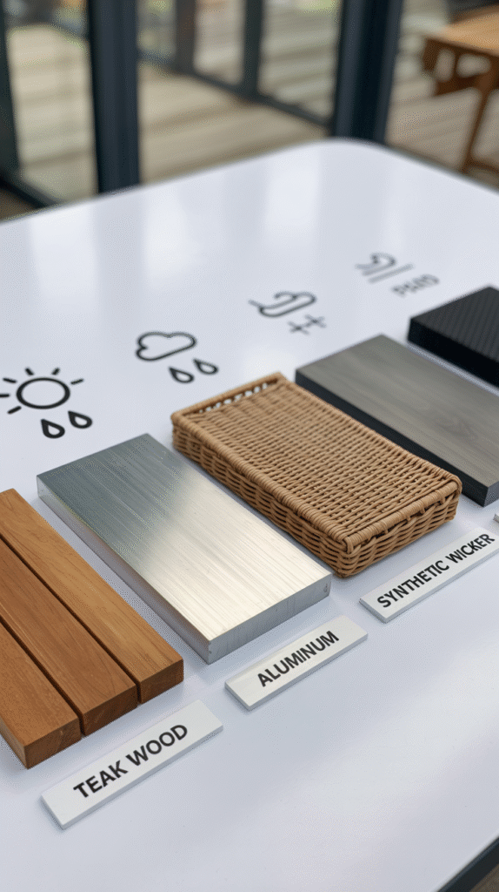
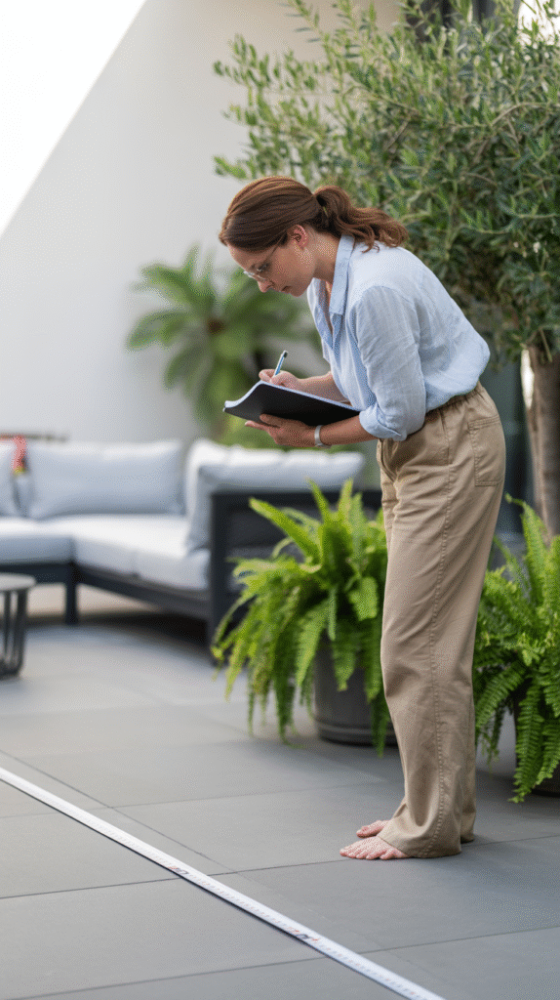
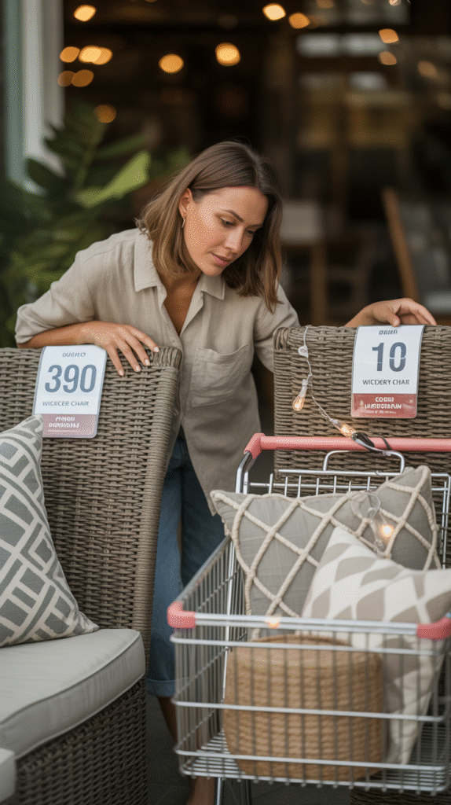
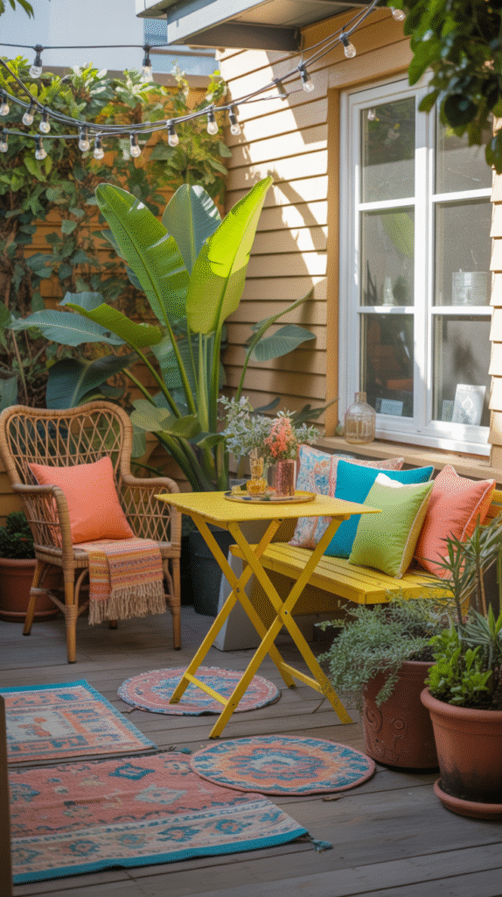
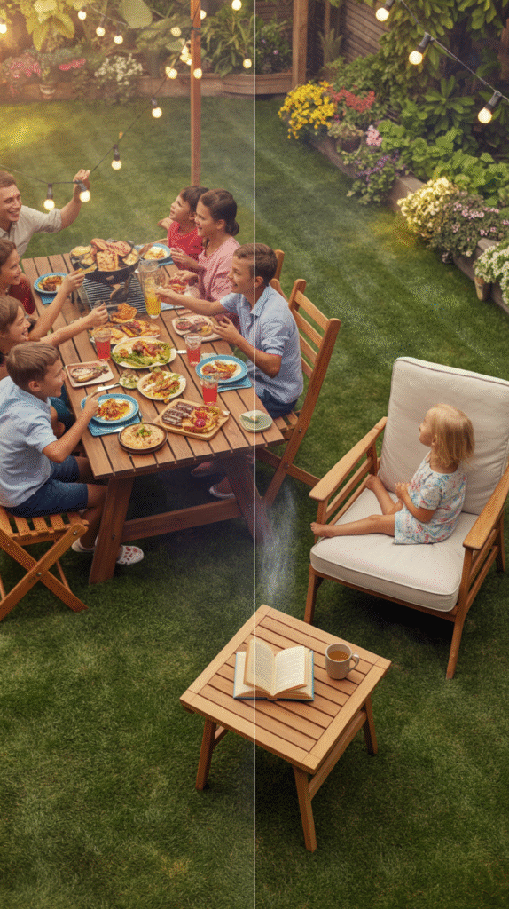
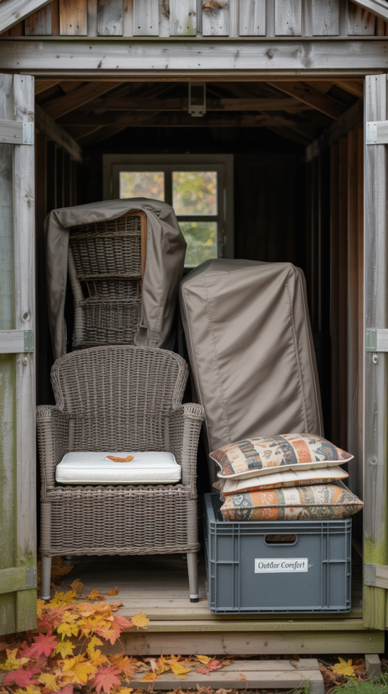
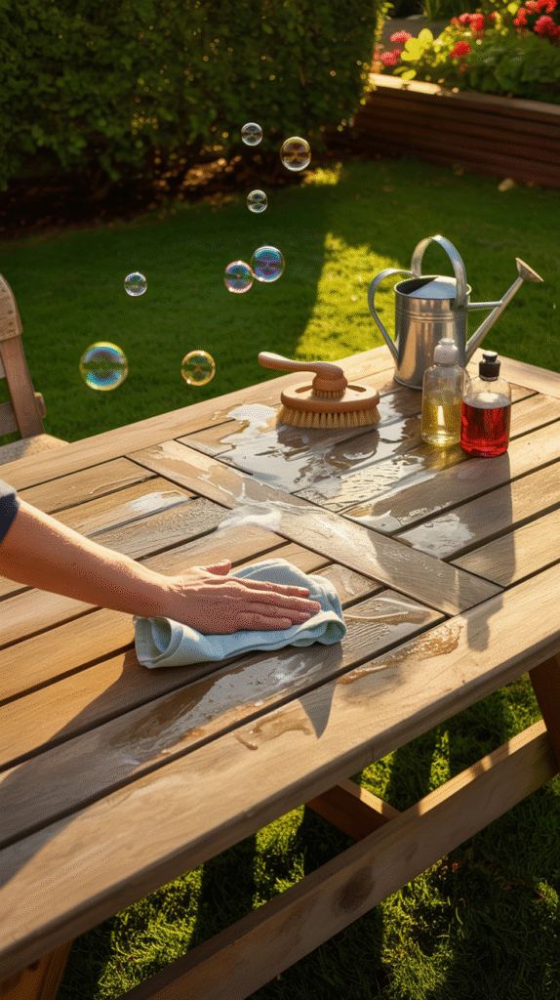

Patio furniture gets chosen the exact same way indoor furniture does.
By looks. Just looks.
Weather and actual use become an afterthought, if they're thought about at all.
That's exactly how a gorgeous set ends up faded, rusted, or just plain uncomfortable by the end of one season.
Here's the actual decision process. Not just a list of pretty styles.

Start With Comfort, Not the Photo
Furniture that looks stunning in photos but is miserable to sit in defeats the whole point of an outdoor space.
Test the seating in person whenever you can.
Photos and spec sheets can't catch a comfort problem the way actually sitting down does.
Pick Materials for Your Actual Weather
Teak and aluminum both shrug off moisture and sun pretty well.
Wicker and certain fabrics need more protection, or a seasonal trip into storage.
Your local climate matters more than personal preference here.
A material that thrives somewhere dry might not survive somewhere humid.

Know the Space Before You Shop
The patio's real dimensions, sun exposure, and typical wind all shape the right furniture choice.
That should happen before any style preference enters the conversation.
Measure the space. Map out how people actually walk through it.
Skip this and you end up with furniture that's technically gorgeous and practically too big.

Set a Budget That Rewards Durability
Spend more on frame durability and weather resistance.
Spend less chasing trend-driven style details.
That trade pays off longer.
A smaller, higher-quality set usually outlasts a bigger, cheaper one that needs replacing in a couple of seasons anyway.

Choose a Style That Actually Fits Your Home
Outdoor furniture deserves the same style attention as anything indoors.
It's an extension of your home. Not some separate, lower-priority category.
A style that complements your home's existing architecture and interior feels more cohesive than one picked in isolation.

Match It to How You Actually Live Out There
A household that hosts constantly needs different furniture than one that mostly wants quiet morning coffee outside.
Be honest about how the space actually gets used.
Not how you imagine it might get used someday.
That honesty is what gets you furniture that earns its keep daily.

Think About Where It Goes When the Weather Turns
Furniture that folds, stacks, or stores away compactly during harsh weather lasts a lot longer than furniture left exposed year-round.
Factor this in before you buy.
Not after the first furniture cover gives out.

Be Honest About Maintenance
Some materials need regular sealing, cleaning, or covering.
Others just get hosed off and left alone.
Be realistic about how much upkeep you'll actually do.
Not how much you ideally should do.
That honesty is what keeps the set looking good years in, not just the first summer.

You've Got This
None of these factors need equal weight for every household.
Start with comfort and materials, since both shape how the set holds up and feels day to day.
Then work through space, budget, and style from there.
The right patio furniture earns its keep for years, not just one good-looking season.
Give it that level of thought, and it'll give years of actual use back.